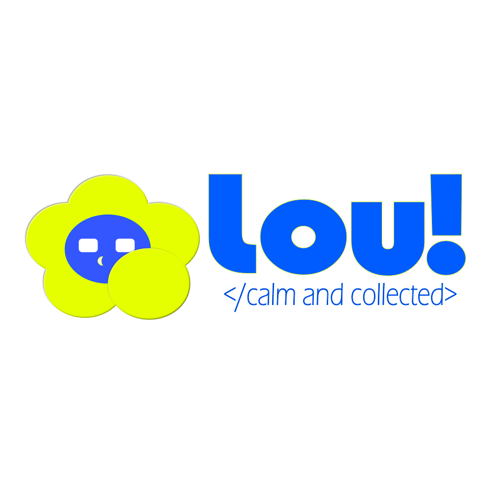
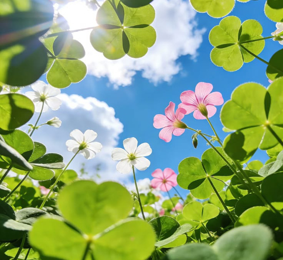
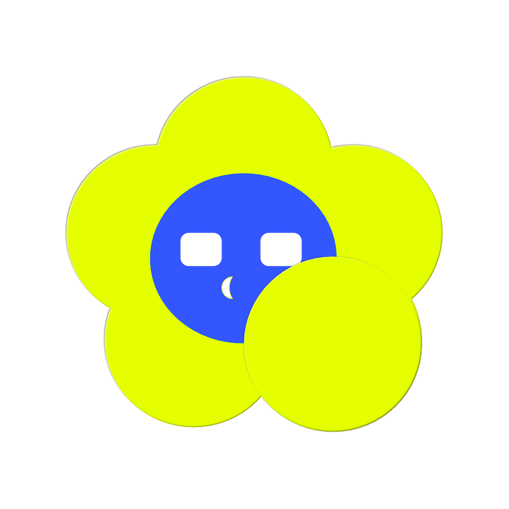
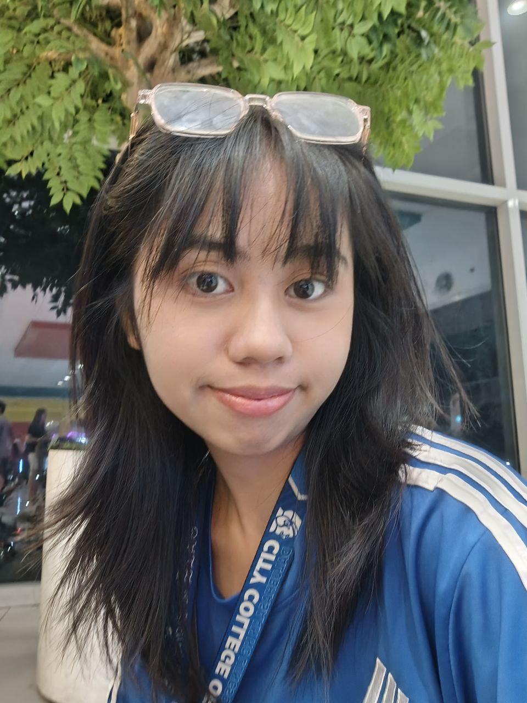
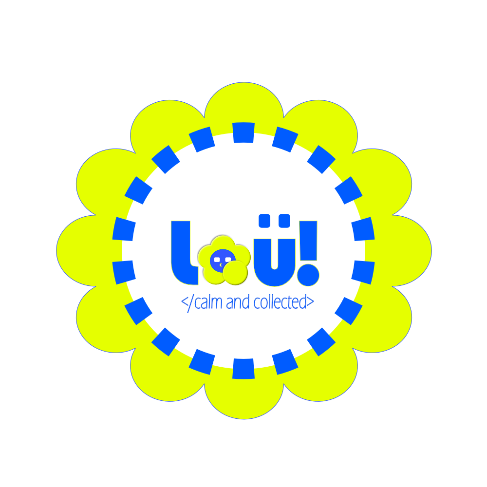

Design
Designing posters, school publication materials (pubmats), and organization teaser edits with an eye for playful visual storytelling.
PostersPubmatsTeaser edits

say hello ↗
HELLO, WORLD! ✳
Hi! I’m Lady Lou Betco, a Computer Science student with a love for playful design, creative visuals, and building things for the web. Welcome to my little corner of creativity!


a little bit of sunshine ☀
I'm Lady Lou Betco, a Computer Science student from City College of Calamba who loves exploring both creativity and technology. My design style is flexible as I enjoy creating playful and experimental visuals, but I can also adapt to clean, polished, and professional designs depending on the project's needs. From posters, publication materials, and organization teasers to websites and API development, I enjoy finding different ways to bring ideas to life. I'm also interested in becoming an AI engineer after graduation, and I'm currently building my knowledge one project at a time.
discover what I do ↗A mix of design, development, and digital creativity. I’m still learning, and that’s part of the fun!
Designing posters, school publication materials (pubmats), and organization teaser edits with an eye for playful visual storytelling.
Creating websites and landing pages, exploring API integrations, and growing my skills in computer science and AI.
Supporting social media engagement and creating digital content using Canva, Affinity, CapCut, and Figma.
A little bit of creativity, a little bit of code.
Creative posters, publication materials, and visual designs.
Explore project ↗ 02 / SELECTED WORKTeasers, creative video edits, and visual storytelling.
Explore project ↗ 03 / SELECTED WORKA backend development project for library management.
Explore project ↗ 04 / SELECTED WORKA responsive landing page for Tech Week.
Explore project ↗ 05 / SELECTED WORKMore experiments, creative work, and development projects.
Explore project ↗GOT AN IDEA? OR JUST WANNA CHAT?
Have a project in mind, a creative idea, or just want to connect? I’d love to hear from you!
Currently learning, creating, and open to connecting.